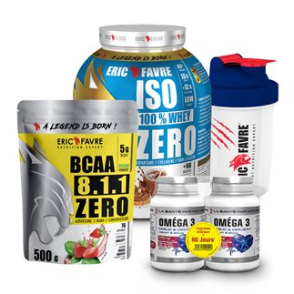
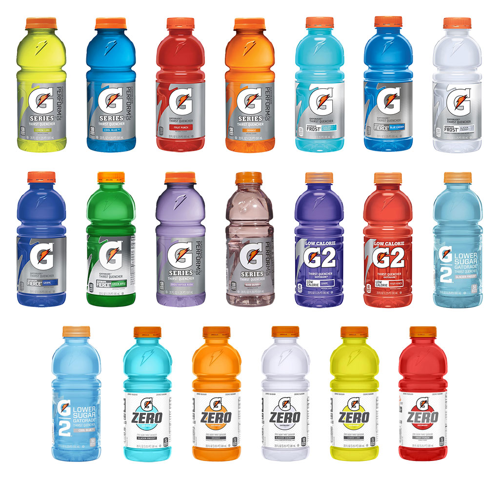
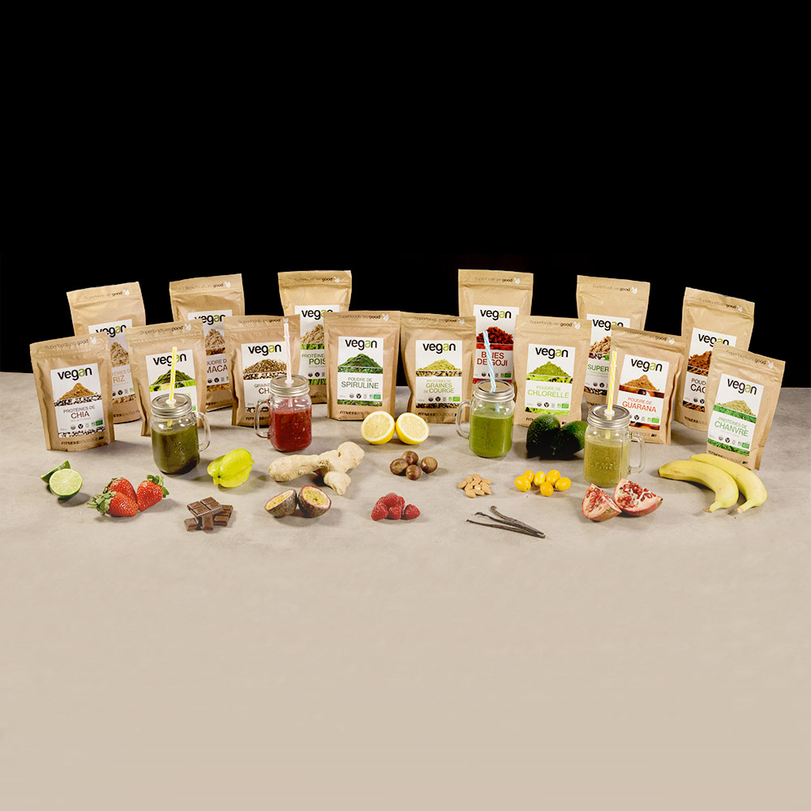

KingFit, en collaboration avec Eric Favre
En plus de ses équipements sportifs, KingFit collabore maintenant avec la marque de nutrition sportive Eric Favre. Eric Favre est une marque de nutrition sportive spécialisée pour vous aider après vos séances de musculation ou de fitness mais aussi de produits bien-être.
La marque propose deux gammes, une gamme santé et détox pour toute personne souhaitant purifier son corps ou perdre du poids. Mais aussi, une gamme protéinée pour vous aider dans vos exercices de musculation, bruler vos graisses et vous aider à prendre de la masse musculaire afin d'améliorer vos performances sportives.

Gatorade est une marque de boissons destinées aux sportifs, pionnière du genre et leader au U.S.A.
Elles sont fabriquées pour réhydrater et apporter des électrolytes lors d'efforts physiques.
Elles sont fabriquées pour réhydrater et apporter des électrolytes lors d'efforts physiques.

VEGAN
Proteines de Riz 83 % Cru et BIO
Régime Vegan / Végétarien Proteines de Riz 83 % Cru et BIO VEGAN :
83 % de Protéines végétales à base de riz
- Les plus simples
- Les plus digestes
- Les mieux assimilées (98 %)
L'AVIS KINGFIT
Des protéines végétales qui conviennent à tous, grands ou petits, sportifs ou non actifs... à aromatiser avec le chocolat criollo !
Proteines de Riz 83 % Cru et BIO
Régime Vegan / Végétarien Proteines de Riz 83 % Cru et BIO VEGAN :
83 % de Protéines végétales à base de riz
- Les plus simples
- Les plus digestes
- Les mieux assimilées (98 %)
L'AVIS KINGFIT
Des protéines végétales qui conviennent à tous, grands ou petits, sportifs ou non actifs... à aromatiser avec le chocolat criollo !